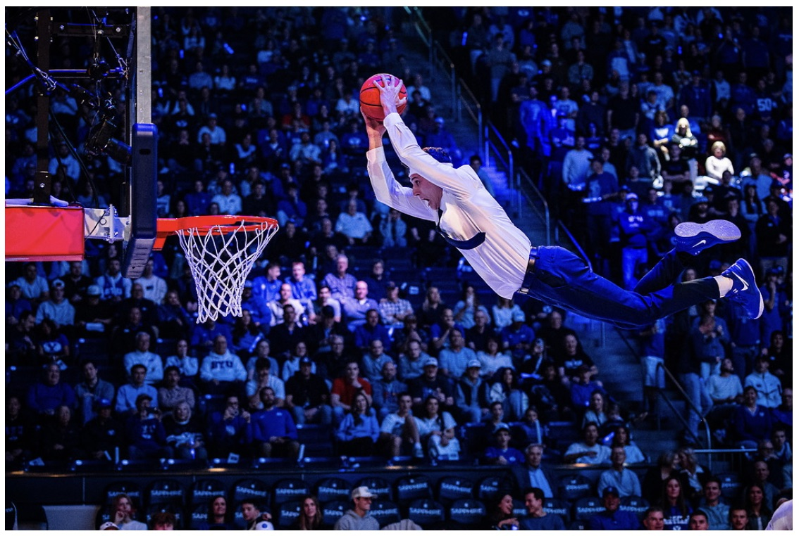

I am a son of God. I love Jesus Christ, and He is my friend. I am a motivated student-athlete who values education, service, leadership, and spiritual growth. Following my mission in João Pessoa, Brazil, I taught Portuguese to new missionaries at the Missionary Training Center and now serve there as an In-field Mentor, supporting and guiding missionaries in their preparation, spiritual growth, and personal development. I am also currently serving on the stake High Council, where I have the opportunity to serve closely alongside my wife, Tiara. Professionally, I am a business owner, and my wife and I operate a food truck called Boba Shack, which has taught me responsibility, discipline, and practical business skills. I am a member of the BYU Dunk Team, where I perform at BYU athletic events and participate in weekly elementary school visits through a program known as Cougar Built, helping create positive and memorable experiences for children. I intend to study Accounting in the BYU Marriott School of Business and plan to apply this spring. I’ve wanted to come to BYU all my life, where I hope to become a lifelong learner and further develop the knowledge and discipline needed to build and grow successful companies. I aspire to give back to BYU as an alumnus in gratitude for the education, opportunities, and foundation it continues to provide me.

